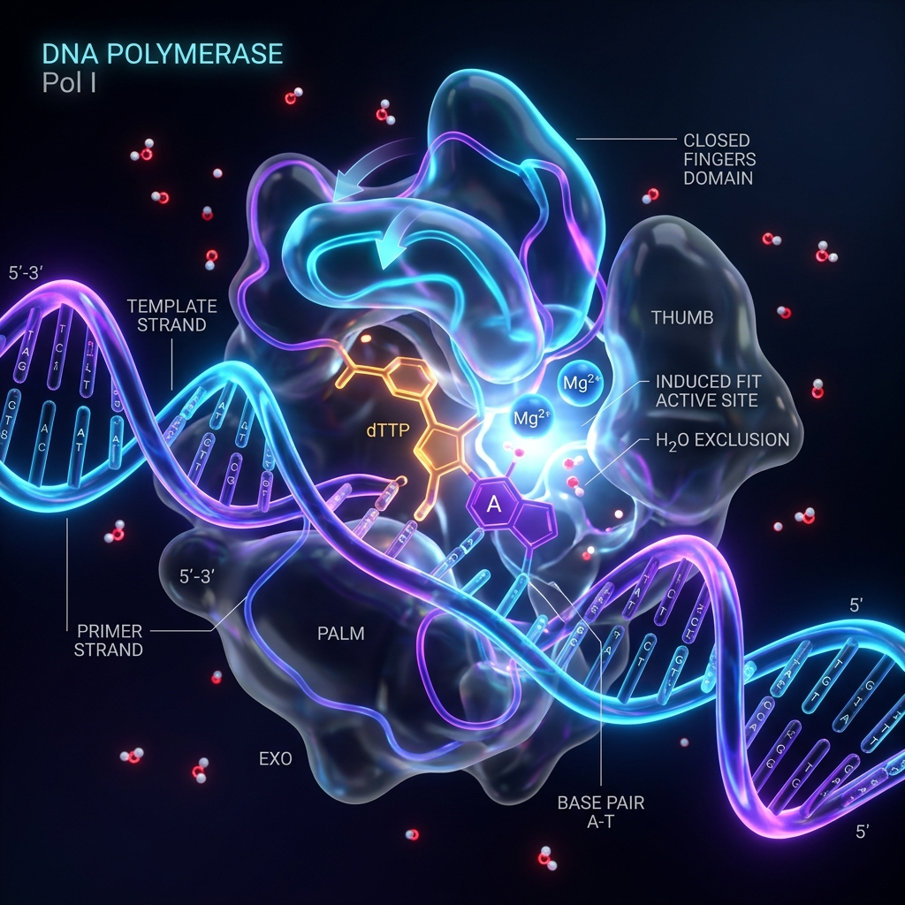
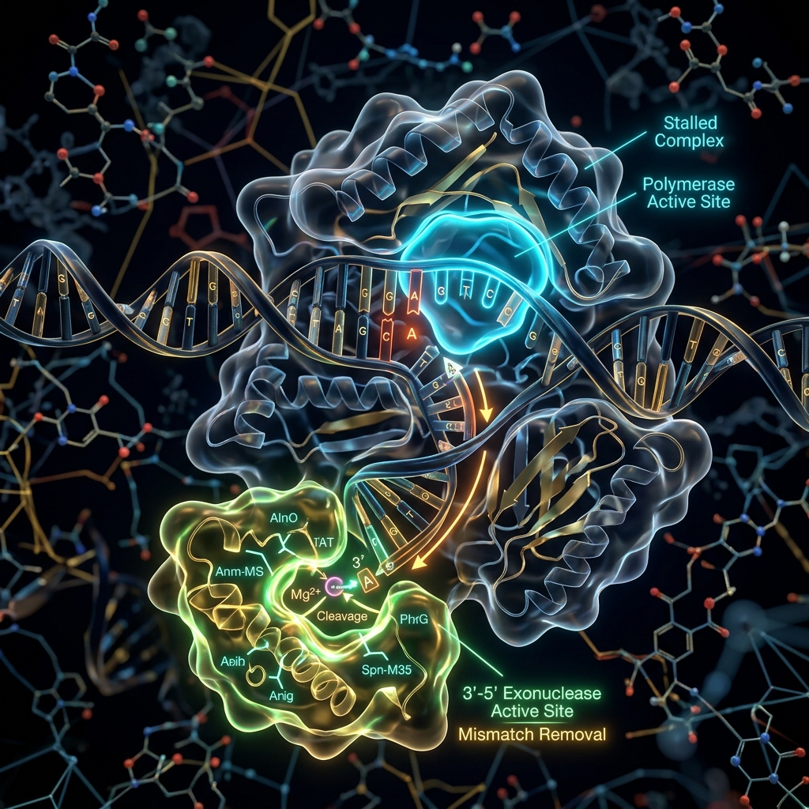

Topic 6
Conformational Entropy & Active-Site Geometry
The Kinetic and Thermodynamic Filters of DNA Polymerase
1. Why It Matters & What Problem It Solves
We previously established how the thermodynamic balance of hydrogen bonding and desolvation energetically penalizes mismatched base pairs. However, relying on free energy (\(\Delta G\)) differences alone is mathematically insufficient. Thermodynamics alone accounts for an error rate of about 1 in 1,000 to 1 in 10,000 bases.
Yet, the actual baseline error rate of DNA polymerase in vivo is an astonishing 1 in 10,000,000 bases. Where does this massive, multi-log magnitude leap in accuracy come from?
The Gatekeeper: The cellular environment is hot, chaotic, and driven by thermal noise. Chemistry alone isn't strict enough to prevent lethal mutation loads. To bridge the gap, the enzyme utilizes its Active-Site Geometry and exploits Conformational Entropy to create an insurmountable Kinetic Barrier. It serves as the ultimate gatekeeper—acting immediately after thermodynamic attraction, but before mismatch repair mechanisms are required.
2. Active-Site Geometry & Steric Fit
The active site of DNA Polymerase is not merely a chemical binding pocket; it acts as a rigid, precise physical mold. Remarkably, all canonical Watson-Crick base pairs (A=T, T=A, G≡C, C≡G) possess virtually identical overall geometries, measuring approximately 10.8 Ångströms wide.
The polymerase pocket is tailored exactly to this dimension, strictly enforcing geometric equivalence before any chemical bond is formed.

3. The Induced Fit Mechanism
When a geometrically correct nucleotide binds, this perfect steric fit triggers a massive conformational change within the enzyme. The "Fingers" domain of the polymerase rapidly rotates and closes tightly over the active site.
This closed state is critical for catalysis: it physically excludes bulk water from the active site and precisely aligns the catalytic Mg2+ ions to attack the incoming phosphate group.

4. Mismatch Disruption & Conformational Entropy
If an incorrect, non-canonical base pairs (e.g., a bulky Purine-Purine mismatch), the combined width significantly exceeds the 10.8 Å limit. This oversized geometry causes a severe Steric Clash.
The "Why": Conformational Entropy
Why must the enzyme close so tightly to catalyze the bond? This requirement is governed by Conformational Entropy.
\(S = k_B \ln W\)
- \(S\) (Entropy): The degree of disorder or flexibility in a system.
- \(k_B\) (Boltzmann Constant): Links thermodynamic temperature to energy.
- \(W\) (Microstates): The number of possible physical shapes or structural positions.
A free-floating enzyme is highly flexible, occupying a state of high entropy (High \(W\)). However, the highly specialized chemistry of phosphodiester bond formation requires absolute, rigid precision. The enzyme must "freeze" into a single, low-entropy state (Low \(W\)) to align the reacting atoms perfectly. When a mismatch occurs, the steric clash physically jams the Fingers domain open. The enzyme remains trapped in a high-entropy, chaotic state where water rushes in, catalytic ions are misaligned, and successful catalysis is physically impossible.
5. Transition State Theory
The failure to achieve the closed conformation directly dictates the speed of the chemical reaction, modeled by the Eyring-Polanyi equation:
\(k = \frac{k_B T}{h} e^{-\frac{\Delta G^\ddagger}{RT}}\)
- \(k\): Rate Constant (reactions per second).
- \(\frac{k_B T}{h}\): Theoretical maximum speed limit.
- \(\Delta G^\ddagger\): Activation Free Energy (the critical energy hill).
Because \(\Delta G^\ddagger\) is positioned in a negative exponential, a slight geometric misalignment from a mismatch causes a massive spike in \(\Delta G^\ddagger\). This exponential relationship causes the reaction rate \(k\) to plummet drastically (by a factor of \(10^4\) to \(10^5\)).

6. The Proofreading Trigger
We can trace the entire error-prevention cascade:
- Thermodynamics fails (a wobble base binds).
- Bulky mismatch creates a Steric Clash.
- Induced Fit fails; Fingers cannot close.
- Activation Energy (\(\Delta G^\ddagger\)) spikes exponentially.
- Catalytic rate (\(k\)) stalls to near zero.
The Final Trigger: Stalled in the open position, the thermal fluctuations of the cell cause the mismatched strand to fray. The strand physically flips downward, moving out of the stalled polymerase site and directly into the separate 3' → 5' Exonuclease active site, where the error is chemically excised.

7. Connection to Bioinformatics (Bioinfo Mattix)
This intricate kinetic stalling and proofreading mechanism is the exact physical origin of the high confidence scores (Phred Q-scores) assigned to next-generation sequencing reads. The molecular physics of the active site determines the baseline error profile that every computational model must account for.
Why is it crucial for Bioinformatics?
When developing pipelines to detect ultra-rare somatic mutations in cancer (e.g., analyzing circulating tumor DNA in blood plasma), bioinformaticians often search for variants present at extremely low allele frequencies (~0.1%). If the inherent baseline error rate of DNA replication (and the sequencing polymerase itself) were not heavily suppressed by this kinetic filter, the background noise would completely drown out the true biological mutations. Statistical variant calling algorithms would be fundamentally useless without it.
How to apply and use it in Bioinformatics
Bioinformaticians directly apply this knowledge in several critical areas:
- Calibrating Base Quality Scores (BQSR): Advanced variant calling tools like GATK rely on accurate models of polymerase error rates. BQSR uses these models to systematically recalibrate the confidence of every single sequenced base, distinguishing true sequencing errors from genuine biological variations.
- Designing Custom Enzymes: Protein engineers leverage molecular dynamics simulations to precisely modify the active-site geometry of polymerases (such as Phusion or Q5). By artificially increasing the \(\Delta G^\ddagger\) penalty for mismatches, they create engineered, ultra-high-fidelity enzymes specifically tailored for highly sensitive sequencing and PCR applications.